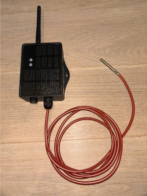
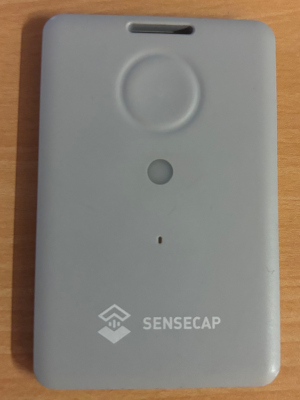
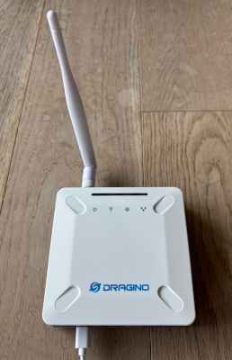
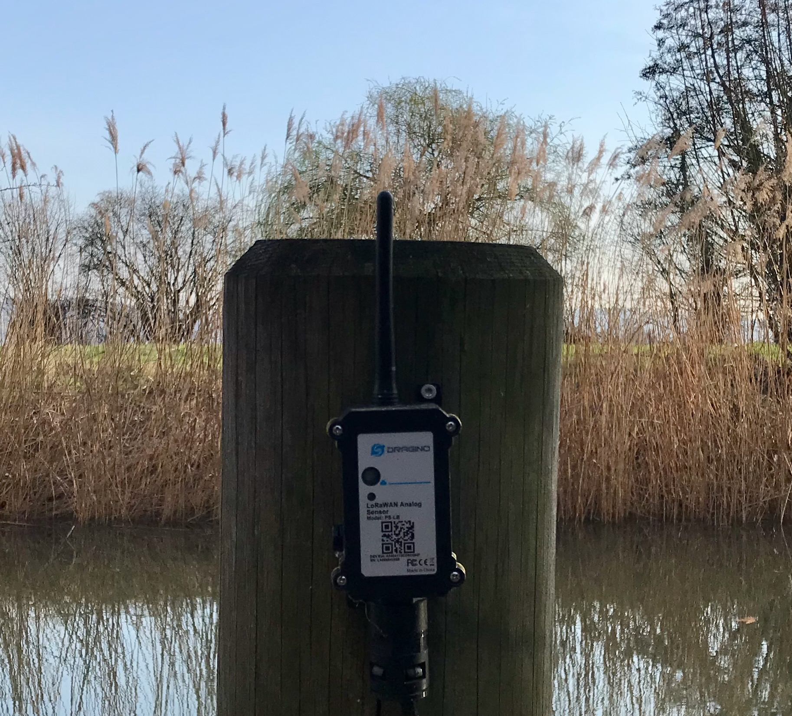

Offline Fallback for a Mobile LoRaWAN Gateway
Jannis Lübbe
jaluebbe
ROSEN Group
LoRaWAN – what is it?
- Long Range Wide Area Network
- Operates at 868 MHz in Europe
- Long range, low power, low data rate
- Encrypted transmission
Typical sensor nodes

Temperature

Water level

GPS location
LoRaWAN architecture

- Gateway forwards raw frames to The Things Stack Sandbox
- Decryption and decoding happen on the Network Server
- Cloud dependency is structural
LoRaWAN data rate & limits
- Up to 5.5 kbit/s – roughly comparable to a fax machine 📠 (still indispensable in Germany)
- Legal duty cycle limit: 1% → max. 36 s/h on air
- TTN fair use policy: max. 30 s airtime per day
Sensor online, internet offline

- Water is rising
- Internet is gone
- All data disappears into nowhere
The hybrid approach

- Act as a TTN gateway
- Decode all own device messages locally
- No changes to devices
- No changes to TTN
UDP stream duplication
lora_pkt_fwd (SPI)
| UDP :1700
gwmp_mux.py # duplicates uplink frames
|
+---> TTN cloud :1700
+---> localhost :1701
|
message_collector -> Redis -> message_handlerTracing a message
The gateway receives an encrypted LoRaWAN frame:
| MHDR | DevAddr | FCnt | FPort | FRMPayload | MIC |
|---|---|---|---|---|---|
| 40 | A1B2C3D4 | 0002 | 01 | 2c46e592c0b8c0642 | 4fc865e |
Our interceptor picks this up in parallel to TTN.
Everything visible except the payload.
LoRaWAN encryption
- Each device has its own session keys (AppSKey, NwkSKey)
- Without the keys, the payload is unreadable
- Keys are stored on the Network Server – fetch them via TTN API
Fetching session keys from TTN
# request_ttn_devices.py (simplified)
for app_id in application_ids:
for device in list_application_devices(session, app_id):
net_data = request_device_keys(session, app_id, device["device_id"])
app_data = request_app_device_data(session, app_id, device["device_id"])
store_device_session_in_db(
dev_eui = net_data["ids"]["dev_eui"],
dev_addr = net_data["session"]["dev_addr"],
app_s_key = app_data["session"]["keys"]["app_s_key"]["key"],
nwk_s_key = net_data["session"]["keys"]["f_nwk_s_int_key"]["key"],
...
)What about messages before the first key fetch?
- Undecoded messages are stored and reprocessed once keys are available
- Requires at least one successful TTN connection per device
- Configure devices to avoid unnecessary re-joins
Decryption at the gateway
# message_processor.py
raw_hex = "40d4c3b2a1000200012c46e592c0b8c06424fc865e"
info = requests.post(f"{BASE_URL}/info/hex",
json={"payload": raw_hex}).json()
# --> devAddr, fPort, fCnt, frmPayload (encrypted)
session = get_latest_session_by_dev_addr(info["devAddr"])
# --> application_id, device_id, app_s_key, nwk_s_key
decrypted = requests.post(f"{BASE_URL}/decrypt/hex", json={
"payload": raw_hex,
"app_s_key": session["app_s_key"],
"nwk_s_key": session["nwk_s_key"],
}).json()
# --> "f09f918bf09f8c8d"The payload decoder problem
- Device payload decoders exist as JavaScript only
- Python has no access to JS libraries directly
- Options: rewrite in Python, call subprocess, or…
Node.js HTTP service
// nodejs/decoders_api.js (key routes)
app.post("/info/hex", (req, res) => extractMessageInfo(req, res, "hex"));
app.post("/decrypt/hex", (req, res) => decryptPayload(req, res, "hex"));
app.post("/decode/hex", (req, res) => decodePayload(req, res, "hex"));// decrypt uses lora-packet library
const packet = lora_packet.fromWire(Buffer.from(payload, "hex"));
lora_packet.verifyMIC(packet, NwkSKey); // integrity check
const decrypted = lora_packet.decrypt(packet, AppSKey, NwkSKey);Why HTTP and not subprocess?
- Python and Node.js run independently
- Errors surface as HTTP status codes
- Node.js starts once, not per message
Payload decoding
// decoders/demo/hello_world.js
function decodeUplink(input) {
return {
data: { text: Buffer.from(input.bytes).toString("utf8") },
warnings: [],
errors: []
};
}
module.exports = { decodeUplink };decoded = requests.post(f"{BASE_URL}/decode/hex", json={
"payload": decrypted,
"application": session["application_id"],
"device": session["device_id"],
"fPort": info["fPort"],
}).json()Local data storage & API
- Decoded messages stored in SQLite
- FastAPI serves the data on port 8080
- Data stays accessible offline
Don't rewrite what already exists – orchestrate it.
- lora-packet (JS) for LoRaWAN decryption
- Manufacturer decoders (JS) for payloads
- Python for orchestration and data storage
HTTP makes language boundaries irrelevant.
Thank you for your attention
By the way – this was in that payload:
👋🌍